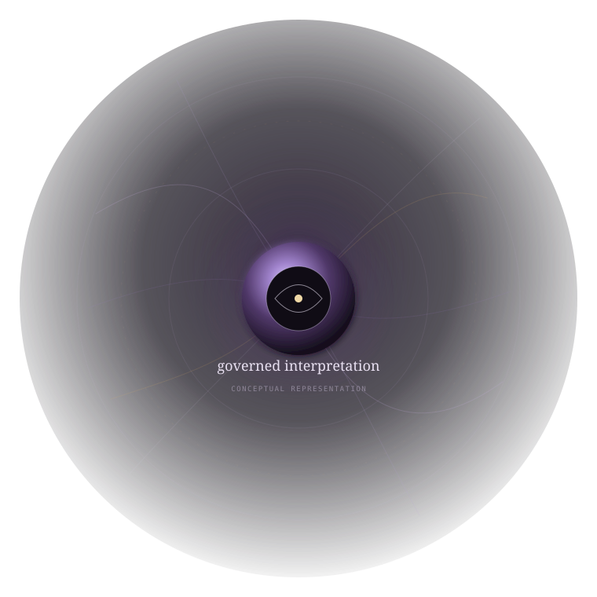

What exists
A functioning software foundation
Viola is beyond a concept document. It is developed software built to support specialized perception paths, comparative experimentation, and controlled multimodal research.
Developed assetDeveloped multimodal-perception software
A developed software foundation for exploring how specialized visual strategies can contribute complementary information to machine perception—while keeping capability, evidence, and future potential clearly separated.

The opportunity
Many vision systems optimize one dominant representation. Viola approaches the problem from a broader premise: different perceptual strategies can emphasize different information, and a structured environment for comparing those strategies may create new opportunities in machine perception research and development.
What exists
Viola is beyond a concept document. It is developed software built to support specialized perception paths, comparative experimentation, and controlled multimodal research.
Developed assetWhy it matters
Distinct perceptual strategies can highlight different aspects of the same environment. Viola provides a foundation for examining those differences without collapsing everything into one undifferentiated visual representation.
Strategic potentialWhy it is disciplined
The project is designed to distinguish implemented capability from scientific support and from future research ambition. Stronger claims are treated as an evidence problem, not a marketing shortcut.
Governed research postureProduct proposition
The public presentation describes product-level capability only. Proprietary implementation details, internal composition, and reconstructive technical information are intentionally excluded.
Explore multiple visual strategies rather than forcing every task through one uniform perceptual treatment.
Examine how different approaches respond to the same problem and where complementary information may emerge.
Support controlled combination of compatible outputs while preserving the distinction between assumptions, evidence, and interpretation.
Keep the strength of scientific support visible so research conclusions remain proportionate to what has actually been demonstrated.
Differentiation
Viola is positioned as a structured machine-perception research foundation: multiple specialized approaches, comparative analysis, controlled combination, and explicit evidence discipline within one project environment.
Multiple specialized visual strategies within a single research environment
Clear separation between current capability and future research ambition
Evidence-aware positioning intended to reduce scientific overstatement
A foundation for future comparative, multimodal, and reliability-oriented R&D
Evidence posture
The project maintains a distinction between engineering implementation, software verification, scientific provenance, independent evidence, and stronger forms of external validation.
Buyer interpretation
A prospective acquirer can assess Viola as a developed technology asset without being asked to accept claims beyond the available evidence. Deeper technical substantiation belongs in a controlled due-diligence process.
Strategic fit
The strongest fit is likely where organizations already invest in machine vision, multimodal sensing, applied AI, robotics, or experimental perception research.
Applied AI
Explore whether specialized visual strategies can add task-specific information before downstream reasoning or decision systems.
Robotics & autonomy
Investigate complementary perception approaches for environments where one visual treatment may not capture every relevant cue.
Industrial R&D
Extend the platform toward selected sensing, inspection, tracking, or machine-vision research programs.
Vision research
Use an evidence-aware framework for comparative work without treating inspiration, calibration, and validation as equivalent.
Development potential
These are development directions, not current performance claims.
Functioning software for specialized, evidence-aware multimodal perception research.
Extend external evidence across additional tasks, data, and operating conditions.
Advance how compatible perceptual outputs are compared and combined under explicit reliability constraints.
Evaluate selected applications against relevant conventional baselines.
Move toward context-aware selection of specialized perception strategies.
Acquisition context
This public website is intended to help a prospective acquirer understand the opportunity without disclosing the proprietary recipe. Confidential technical substantiation, implementation detail, and deeper evaluation materials are intentionally reserved for appropriate due diligence.
Viola
Built as a serious software and research foundation for organizations interested in multimodal machine perception, specialized visual strategies, and evidence-aware experimentation.